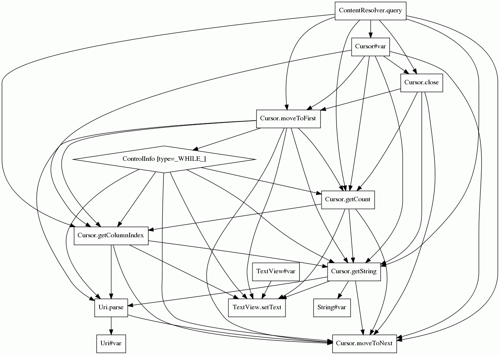

| 1 |
You can use the following query to retrieve all numbers for a certain contact:
/* the following line assumes that the contactCursor you described
* has the People._ID column at index 0 in its projection. */
int contactId = contactCursor.getInt(0);
Cursor numberCursor = getContentResolver().query(Phones.CONTENT_URI,
new String[] {Phones.NUMBER}, Phones.PERSON_ID + "=" + contactId, null, null);
while(cursor.moveToNext()) {
String number = cursor.getString(0);
}
cursor.close();
|
cursor object contact url queri number |
Cursor.close Cursor.Cursor Cursor.getString Cursor.moveToFirst Cursor.moveToNext Cursor.getColumnIndex String.String Cursor.getCount ContentResolver.ContentResolver SQLiteDatabase.rawQuery SQLiteDatabase.SQLiteDatabase Uri.Uri ContentResolver.query Context.getContentResolver Uri.withAppendedPath Integer.Integer TextView.TextView Integer.parseInt String.valueOf TextView.setText Context.Context View.View ArrayList.ArrayList Bundle.Bundle Activity.Activity Uri.parse InputStream.InputStream AsyncTask.AsyncTask InputStream.close URL.URL |
ContentResolver.query(..)
Cursor varCursor
Cursor.close(..)
Cursor.moveToFirst(..)
while
Cursor.getCount(..)
Cursor.getColumnIndex(..)
Cursor.getString(..)
String varString
Uri.parse(..)
TextView varTextView
TextView.setText(..)
Uri varUri
Cursor.moveToNext(..)
|
" /> |